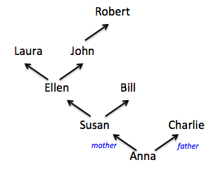

Class summary: Datatypes, Efficiency, and Ancestor Trees
Copyright (c) 2017 Kathi Fisler
1 Organizing Game States
We reviewed the use of multi-case datatypes and how they might relate to defining the state of a videogame. Imagine that you were building a game that featured a robot and an alien. Which of the following two datatypes makes more sense?
data GameState1: |
| robot(pos :: Posn) |
| alien(pos :: Posn) |
end |
|
data GameState2: |
| state(robot-pos :: Posn, alien-pos :: Posn) |
end |
Briefly, the first has you choose between the robot or the alien, whereas the second has both a robot and a alien in the game. See the lecture capture for more discussion of this.
2 Efficiency of Merging Tables
We reviewed the terminology of constant, linear, and quadratic when talking about efficiency, including presenting a diagram showing what each of these look like as graphs of the size of an input versus the number of underlying computations that get performed.
We then returned to the table merging example from the first project, to contrast the efficiency of the approach you took in the project from an approach based on treating the columns as lists. The punchline here is that how to represent your data has a big impact on how efficiently a computation can be performed.
See the lecture capture for more detail.
3 Data Design Problem – Ancestry Data
Imagine that we wanted to represent geneaology information for purposes of a medical research study. Specifically, we want to record people’s birthyear, eye colors, and biological parents. Here’s a picture showing the relationships between people and their biological parents.

To capture this in code, we might create a table such as the following:
family = table: name, birthyear, eyecolor, mother, father |
row: "Anna", 1997, "blue", "Susan", "Charlie" |
row: "Susan", 1971, "blue", "Ellen", "Bill" |
row: "Charlie" 1972, "green", "NoInfo", "NoInfo" |
row: "Ellen", 1945, "brown", "Laura", "John" |
... |
end |
Assume we wanted to be able to answer questions such as the following:
How frequent is each eye color?
How many generations do we have information for?
What’s the average age of mothers (or fathers) at time of birth?
Is one specific person an ancestor of another specific person?
How should we capture this picture in data to be able to write programs to answer our questions?
3.1 Ancestry Trees as Tables
These notes have more detail than we did in class. In class we talked through the problem of finding ancestors loosely. Here, the underlying code is presented in more detail.
Let’s say I wanted to write a function to compute someone’s grandparents (at least, those grandparents known in the tree)
fun grandparents(of-name :: String) -> List<String>: |
... |
where: |
grandparents("Anna") is [list: "Laura", "John"] |
grandparents("Laura") is [list:] |
grandparents("Kathi") is [list:] |
end |
What would be involved in doing that computation? What subtasks would we identify/what functions would we write?
Need to go from a name to the mother
Need to go from a name to the father
Repeat previous two steps on mother and father
Let’s write one of these functions to see what it would look like:
import lists as L |
|
fun get-mother(of-name :: String, from-table :: Table): |
person-row = |
filter-by(from-table, |
lam(r :: Row): r["name"] == of-name end).row-n(0) |
person-row["mother"] |
where: |
get-mother("Anna", family) is "Susan" |
end |
What happens if the person we asked for isn’t in the table (meaning that we don’t know their family history)? Right now, we get a Pyret error. The error arises because we shouldn’t try to use L.get unless we know that we found a row for the named person. We could modify the code, but that would be premature.
As always, start with examples: what should the function produce if the named person doesn’t have a row in the table?
if we raise an error, we can’t use this function to get whichever grandparents are known (the raise would terminate the function)
if we use something like "unknown", we can’t tell the difference between a real name and this value (both are strings)
in practice, we want to return an answer of a _different type_, to avoid both problems. Here, we could return false (the boolean) to indicate that the person wasn’t found.
fun get-mother2(of-name :: String, from-table :: Table): |
person-table = |
filter-by(from-table, lam(r :: Row): r["name"] == of-name end) |
if person-table.length() > 0: |
person-table.row-n(0)["mother"] |
else: |
false |
end |
where: |
get-mother2("Anna", family) is "Susan" |
get-mother2("Fred", family) is false |
end |
If you imagine chaining together calls to get-mother in order to find ancestors (and having to also do that on the father’s side), we’d quickly see that we end up doing a lot of table filtering, which seems inefficient.
Look back at the ancestry tree picture. We don’t do any complicated filtering there – we just follow the line in the picture immediately from a person to their mother or father. Can we get that idea in code instead? Yes, through datatypes.
3.2 Creating a Datatype for Ancestor Trees
For this approach, we want to create a datatype for Ancestor Trees that has a variant (constructor) for setting up a person. Look back at our picture – what information makes up a person? Their name, their mother, and their father (along with birthyear and eyecolor, which aren’t shown in the picture). This suggests the following datatype, which basically turns a row into a person value:
data AncTree: |
| person( |
name :: String, |
birthyear :: Number, |
eye :: String, |
mother :: ________, |
father :: ________ |
) |
end |
What type do we put in the blanks? We did a quick brainstorm after class, and came up with several ideas: person. List<person>, some new datatype, AncTree, String – which should it be??
Tune in next class ...